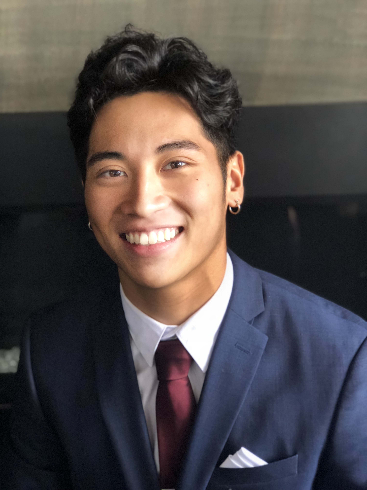

Hello! My name is Dylan Ly and I am currently a student attending the
University of Washington - Seattle, intending to major in Computer
Science & Engineering.
By attending the UW, I hope to learn more about myself and how I can
make my impact on the world. I truly believe in the power of humility,
a growth mindset, and optimism, and I use these qualities as my compass
in my everyday life.
I believe that by strengthening my mental, emotional, and physical
capabilities through adversity and life experiences, I can grow as a
person and become someone that can fulfill his personal responsibilites,
and eventually take on bigger challenges that burden my home, my
community, and the world.
Let us keep our ideals lofty, our imagination unrestrained, our dreams
ambitious and ask ourselves, "What if everything works out?"